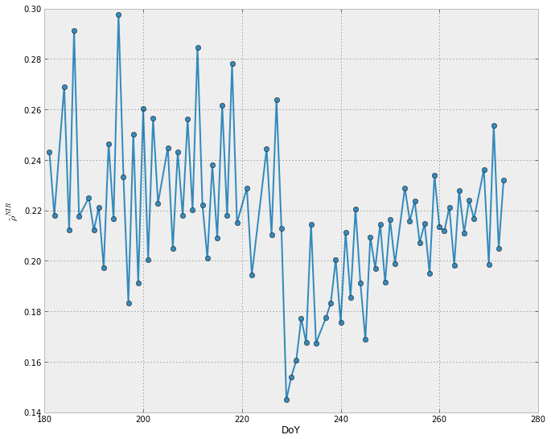
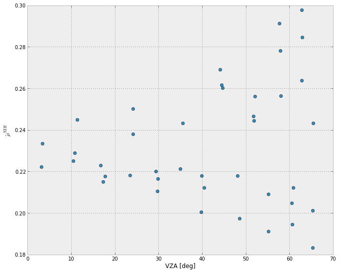
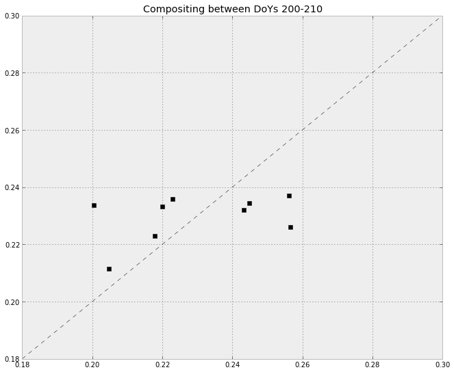
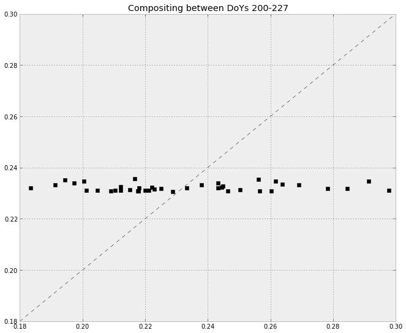
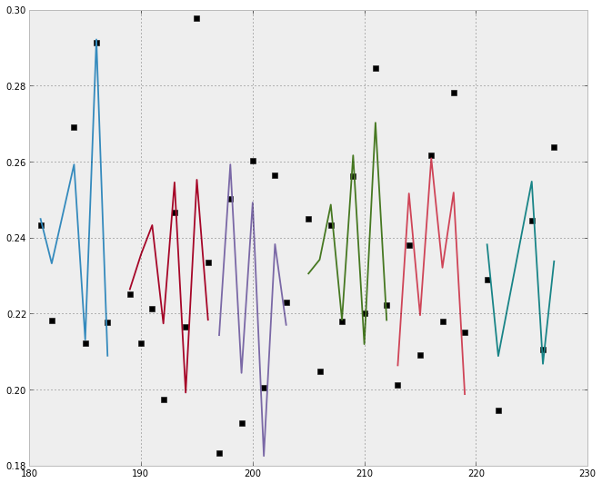

This post introduces simple BRDF modelling (i.e. how can we account
for the variation in surface reflectance due to acquisition geometry?)
using some MODIS data. You can find the whole post in wakari. If you
accept to not escape the HTML & JS, you will find a link to the data file
there too.
A particularly simple way of dealing with BRDF effects is by using
linear kernel models. These models are reduced physics versions of more
complex radiative tranfer models with some empirical considerations to
further simplify things. Since we are only interested in the shape of
the BRDF, we can lump the parameters into some constants of limited
physical explanatory value, and do a few simplifications so that we can
write the the observed reflectance at band λi
as:
While different families of these kernels are used, we use the
Ross-ThickLiSparse-Reciprocal kernels (these have been evaluated and
found to be quite good).
The problem stated above cannot be solved on a daily basis (or whenever
an observation becomes available): there are 3 parameters per band, and
only one observation, so the system is underdetermined. If we assume
that the parameters can be related to land surface parameters, and we
assume that change is slow, a way around this is temporal compositing,
where all the observations within a given period are inverted together.
It is important to take uncertainty in the observations into account, as
we don't measure ρλi
, but rather
ρ̂λi = ρλi + ϵλi
,
where ϵλi
is additive noise, typically modelled
as zero mean and with a known variance (see Roy et al for a table with
typical values for MODIS).
Reading the data
Let's look at some data. The data is stored in a text file, and belongs
to a pixel somewhere in Angola. We only have band 2 data here. The first
ten lines of the file show the format. The first line is a header,
telling us that there are 92 observations, with 7 bands, as well as
their centre wavelengths. After the first line, we have individual
records with the following format:
- day of year (DoY)
- QA flag (1=use, 2=don't use)
- vza, the view zenith angle (in degrees)
- vaa, the view azimuth angle (in degrees)
- sza, the solar/illumiation zenith angle (in degrees)
- saa, the solar/illumiation azimuth angle (in degrees)
- the reflectance
Typically, we will use sza, vza and raa. raa``=``vaa -
saa.
First, we need to get the data. The next code snippet will provide you
with a link to the datafile that you can download (hopefully) from wakari
!head -n 10 data.r2023.c87.dat
BRDF 92 7 648 858 470 555 1240 1640 2130
181 1 65.419998 -84.470001 44.130001 20.090000 0.114600 0.243200 0.052800 0.087100 0.328300 0.302300 0.213400
182 1 23.410000 98.290001 50.220001 35.310001 0.113900 0.218100 0.051100 0.084500 0.315900 0.339000 0.205500
184 1 44.049999 100.730003 51.910000 38.360001 0.142900 0.269100 0.063400 0.107500 0.359300 0.375000 0.246500
185 1 40.400002 -82.199997 46.310001 27.700001 0.107000 0.212100 0.051600 0.079900 0.310400 0.310400 0.214100
186 1 57.720001 101.300003 53.700001 41.259998 0.152700 0.291400 0.064600 0.114800 0.395000 0.382700 0.258700
187 1 17.770000 -81.010002 47.630001 31.260000 0.111000 0.217700 0.050500 0.081600 0.307600 0.318500 0.205500
188 0 0.000000 0.000000 0.000000 0.000000 0.000000 0.000000 0.000000 0.000000 0.000000 0.000000 0.000000
189 1 10.470000 96.879997 49.090000 34.650002 0.117500 0.225000 0.054200 0.087700 0.334600 0.334300 0.231400
190 1 60.889999 -83.790001 44.070000 22.910000 0.100200 0.212100 0.045900 0.074100 0.296100 0.302100 0.188200
Let's read the data in and do some plots!
data = np.loadtxt ( "data.r2023.c87.dat", skiprows=1) # Read data in, but skip first line
doys = data[ :, 0]
qa = data [ :, 1 ]
vza = data [ :, 2 ]
sza = data [ :, 4 ]
raa = data [ :, 3 ] - data [ :, 5 ]
rho = data[:,7]
plt.plot ( doys[qa==1], rho[qa==1], 'o-')
plt.xlabel("DoY")
plt.ylabel(r'$\hat{\rho}^{NIR}$')

The high frequency variation is quite high, and over a fairly short
period, where we only expect a smooth variability of reflectance, we
interpret it as BRDF effects. There's a big dip on DoY 228, due to a
fire (there's a hotspot there too), and then we see recovery due to char
& ash dissipation processes. Let's look at the angular signal up to DoY
228:
passer = np.logical_and ( qa==1, doys < 228 ) # Select obs before the fire
plt.plot ( vza[passer], rho[passer], 'o' )
plt.xlabel("VZA [deg]")
plt.ylabel(r'$\hat{\rho}^{NIR}$')

We see a large scatter in reflectance for larger values of VZA. Now,
let's try to model this. We need to calculate the kernel weights for the
Ross and Li-Thick kernels for each individual observation. We have a
Python class that does that, kernels.py, which can be imported and
used for this:
from kernels import Kernels # Import ther kernels
# Generate the kernels, only bother for obs where the QA is OK
K_obs = Kernels( vza[qa==1], sza[qa==1], raa[qa==1], \
LiType='Sparse', doIntegrals=False, \
normalise=1, RecipFlag=True, RossHS=False, MODISSPARSE=True, \
RossType='Thick' )
kern = np.ones (( np.sum(qa==1), 3 )) # Store the kernels in an array
kern[ :, 1 ] = K_obs.Ross
kern[ :, 2 ] = K_obs.Li
Now we can just solve our system. First with brute force: let's take 8
days worth of data, and invert the kernel weights to see what we get.
This is a straightforward least linear squares problem. The forward
problem is:
Kf = y
andtheinverseproblemisthengivenby
f̂ = minf|Kf − y|2
Forthis, wecanuse`lstsq < http: ⁄ ⁄ docs.scipy.org ⁄ doc ⁄ numpy ⁄ reference ⁄ generated ⁄ numpy.linalg.lstsq.html > `
passer = np.logical_and ( qa==1, np.logical_and( doys > 200, doys <=209))
obs = rho[passer]
K = kern[ passer, :]
(f, rmse, rank, svals ) = np.linalg.lstsq( K, obs )
print "%-20s\t%20s" % ( "Kernel", "Value")
for i, k in enumerate( ["Isotropic", "Ross", "LiThick"] ):
print "%-20s\t%20f" % ( k, f[i] )
Kernel Value
Isotropic 0.242057
Ross -0.065568
LiThick 0.075140
So we have a solution. How good is it? Let's try to forward model the
observations:
fwd = K.dot(f.T)
print "R2: %g" % np.corrcoef ( obs, fwd)[1,0]
plt.plot ( obs, fwd, 'sk')
plt.plot ( [0.2, 0.25], [0.2, 0.25], 'k--', lw=0.5)
plt.ylim(0.2, 0.25)
plt.xlim(0.2, 0.25)
R2: 0.445343

So, not a great fit! Maybe if we use a larger window? Let's create a
function to the the above conveniently:
def invert_composite ( qa, doys, rho, kern, doy_min, doy_max ):
"""A function to invert reflectance assuming the kernels in `kern`,
`qa` holds the QA data, `doys` the dates, and `rho` the actual
observations. Will composite all observations between `doy_min` and
`doy_max`."""
passer = np.logical_and ( qa==1, np.logical_and( \
doys > doy_min, doys <= doy_max))
if np.sum(passer) < 3:
raise np.linalg.LinAlgError
obs = rho[passer]
K = kern[ passer, :]
(f, rmse, rank, svals ) = np.linalg.lstsq( K, obs )
print "N. Obs: %d" % np.sum ( passer )
print "%-20s\t%20s" % ( "Kernel", "Value")
for i, k in enumerate( ["Isotropic", "Ross", "LiThick"] ):
print "%-20s\t%20f" % ( k, f[i] )
fwd = K.dot(f.T)
print "R2: %g" % np.corrcoef ( obs, fwd)[1,0]
plt.plot ( obs, fwd, 'sk')
plt.plot ( [0.18, 0.3], [0.18, 0.3], 'k--', lw=0.5)
plt.ylim(0.18, 0.3)
plt.xlim(0.18, 0.3)
return obs, fwd, passer, f, rmse
retval = invert_composite ( qa, doys, rho, kern, 200, 210 )
plt.title("Compositing between DoYs 200-210")
N. Obs: 9
Kernel Value
Isotropic 0.235238
Ross -0.033419
LiThick 0.054909
R2: 0.386086

retval = invert_composite ( qa, doys, rho, kern, 180, 227 )
plt.title("Compositing between DoYs 200-227")
N. Obs: 41
Kernel Value
Isotropic 0.231309
Ross 0.009338
LiThick 0.000748
R2: 0.05195

Clearly, this window is too big: changes are happening. Also note
the difference of adding just 1 observation to the 10 day period: the
parameters change perceivably, the sign of ill-posedness. Let's see how
the compositing period affects the estimate: we'll try to invert the
pre-fire observations using a 16 and an 8 day compositing period:
retvals = []
for period in xrange ( (227-180)/16 + 1 ):
doy_min = 180 + 16*period
doy_max = 180 + 16*(period+1)
if doy_max > 227:
doy_max = 227
plt.subplot ( 1, 3, period + 1 )
print "=============================================================="
print "DoY Min: %d" % doy_min
print "DoY Max: %d" % doy_max
try:
retvals.append ( invert_composite ( qa, doys, rho, kern, \
doy_min, doy_max) )
except np.linalg.LinAlgError:
print "Not enough obs!"
plt.title("Compositing %d-%d" % \
( doy_min, doy_max) )
==============================================================
DoY Min: 180
DoY Max: 196
N. Obs: 14
Kernel Value
Isotropic 0.238851
Ross -0.006477
LiThick 0.009853
R2: 0.100897
==============================================================
DoY Min: 196
DoY Max: 212
N. Obs: 15
Kernel Value
Isotropic 0.216249
Ross 0.066691
LiThick -0.059062
R2: 0.521575
==============================================================
DoY Min: 212
DoY Max: 227
N. Obs: 12
Kernel Value
Isotropic 0.243611
Ross -0.062851
LiThick 0.063866
R2: 0.646983

retvals = []
for period in xrange ( (227-180)/8 + 1 ):
doy_min = 180 + 8*period
doy_max = 180 + 8*(period+1)
if doy_max > 227:
doy_max = 227
plt.subplot ( 2, 3, period + 1 )
print "=============================================================="
print "DoY Min: %d" % doy_min
print "DoY Max: %d" % doy_max
try:
retvals.append ( invert_composite ( qa, doys, rho, kern, \
doy_min, doy_max) )
except np.linalg.LinAlgError:
print "Not enough obs!"
plt.title("Compositing %d-%d" % \
( doy_min, doy_max) )
==============================================================
DoY Min: 180
DoY Max: 188
N. Obs: 6
Kernel Value
Isotropic 0.215737
Ross 0.217461
LiThick 0.004699
R2: 0.960286
==============================================================
DoY Min: 188
DoY Max: 196
N. Obs: 8
Kernel Value
Isotropic 0.256502
Ross -0.148200
LiThick 0.022454
R2: 0.641367
==============================================================
DoY Min: 196
DoY Max: 204
N. Obs: 7
Kernel Value
Isotropic 0.222352
Ross -0.073762
LiThick -0.074442
R2: 0.825704
==============================================================
DoY Min: 204
DoY Max: 212
N. Obs: 8
Kernel Value
Isotropic 0.211300
Ross 0.154030
LiThick -0.051295
R2: 0.833228
==============================================================
DoY Min: 212
DoY Max: 220
N. Obs: 7
Kernel Value
Isotropic 0.241598
Ross 0.021193
LiThick 0.066551
R2: 0.838989
==============================================================
DoY Min: 220
DoY Max: 227
N. Obs: 5
Kernel Value
Isotropic 0.247820
Ross -0.146072
LiThick 0.076207
R2: 0.74752

We see that the kernel weights change substantially from one period to
the next. The 16 day window seems quite poor, whereas the 8 day one is
remarkably better. This means that fast changes are occurring in the
ground, and the 8 day window is more appropriate.We can see how this
works in time
for period in xrange ( (227-180)/8 + 1 ):
plt.plot( doys[retvals[period][2]], retvals[period][0], 'sk')
plt.plot( doys[retvals[period][2]], retvals[period][1], '-', lw=1.8)
plt.ylim(0.18, 0.3)

Refs
Schaaf, C. B., F. Gao, A. H. Strahler, W. Lucht, X. Li, T. Tsang, N. C.
Strugnell, X. Zhang, Y. Jin, J.-P. Muller, P. Lewis, M. Barnsley, P.
Hobson, M. Disney, G. Roberts, M. Dunderdale, C. Doll, R. d Entremont,
B. Hu, S. Liang, and J. L. Privette, First Operational BRDF, Albedo and
Nadir Reflectance Products from MODIS, Remote Sens. Environ., 83,
135-148, 2002.
Lucht, W., C.B. Schaaf, and A.H. Strahler. An Algorithm for the
retrieval of albedo from space using semiempirical BRDF models, IEEE
Trans. Geosci. Remote Sens., 38, 977-998, 2000.
Wanner, W., A.H. Strahler, B. Hu, P. Lewis, J.-P Muller, X. Li, C.
Schaaf, and M.J. Barnsley, Global retrieval of bidirectional reflectance
and albedo over land from EOS MODIS and MISR data: Theory and algorithm,
J. Geophys. Res., 102, 17143-17161, 1997.